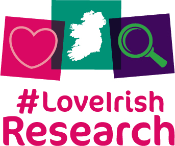
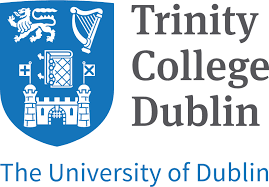

I am a doctoral candidate in the School of English, Trinity College Dublin, where I research contemporary Irish women’s short fiction. Currently, I am based in Trinity Long Room Hub Arts & Humanities Research Institute, and my work is funded by the Irish Research Council.
It is an exciting time to be a researcher of Irish literature, which is enjoying a golden age. I am particularly interested by two subsections of this rich literary field. Firstly, as has been well-documented, women writers are disproportionately well represented in contemporary Irish writing. Winning some of the most illustrious literary prizes in recent years, Irish women’s short fiction has been accoladed both nationally and internationally. Secondly, the short story is one of the most vibrant forms of the contemporary moment, with the rude health of the Irish publishing scene and the recent spate of short fiction anthologies allowing story writers to reflect on social conditions and the world around them in real time.
I focus specifically on short fiction published in the last ten years – including collections by Lucy Sweeney Byrne, Claire Keegan, Nicole Flattery, Danielle McLaughlin, Claire Louise Bennett, Cathy Sweeney, Mary Costello, Wendy Erskine, Lucy Caldwell and June Caldwell, among others.
Broadly, my work examines the ways that literature charts changes and transitions in the ideological underpinnings of contemporary society; my thesis explores literary representations of Ireland’s changing hegemonies, from traditionalism to modernisation and neoliberal late capitalism. As a researcher, I am interested in what it means to ‘write Ireland’ in a context defined by globalisation, neoliberalism, and a post-history outlook.
I also hold a first-class honours degree in English Literature & History from Trinity College Dublin, where I was elected Scholar in 2016. In 2019, I was awarded an MSc. with distinction from the University of Edinburgh.
 